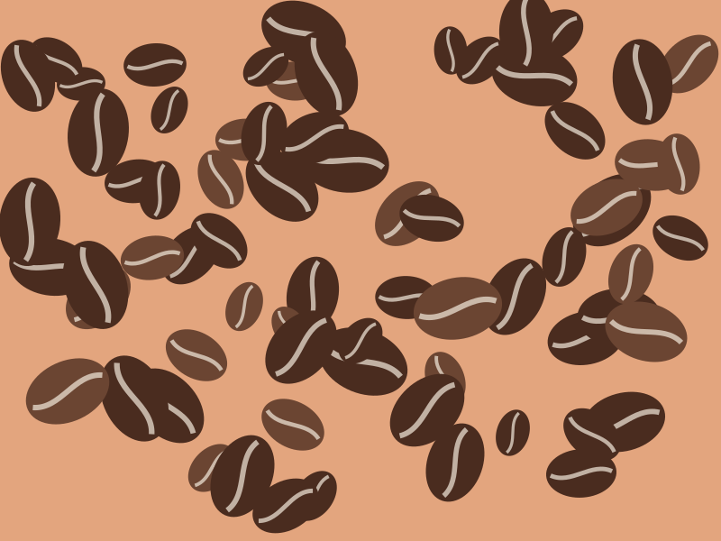
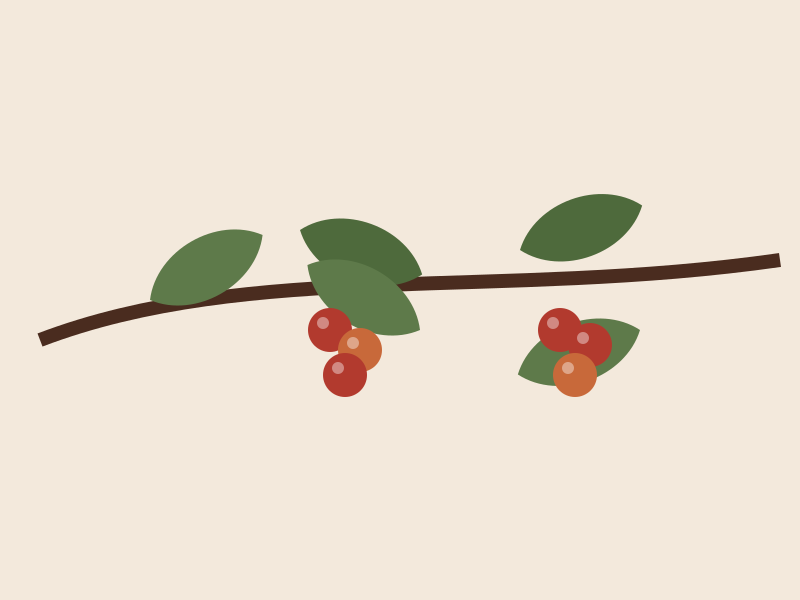
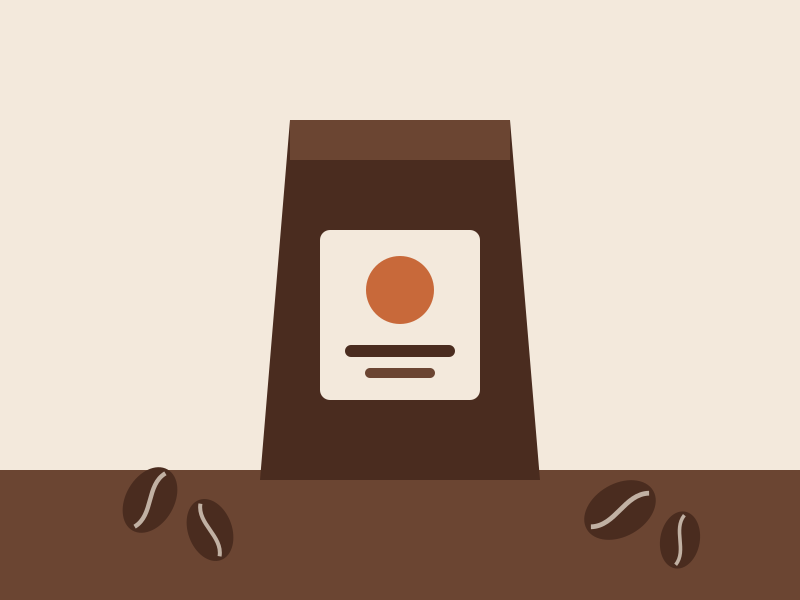

Origen trazable
Sabemos qué finca, qué variedad y qué proceso hay detrás de cada bolsa.
Seleccionamos granos de pequeños productores, los tostamos en lotes cortos y te los enviamos en menos de 72 horas desde el tueste.
Somos un equipo de cinco personas obsesionadas con sacar lo mejor de cada grano. Trabajamos con comercio directo y tostamos para que el café sepa a su origen, no al tueste.
Sabemos qué finca, qué variedad y qué proceso hay detrás de cada bolsa.
Tostamos los lunes y enviamos de martes a jueves. Nunca café viejo.
Bolsas con válvula que conservan el aroma y no generan residuos plásticos.

Panela, naranja y cacao. Ideal para espresso.
14,50 € / 250 g

Floral, bergamota y melocotón. Perfecto para filtro.
16,00 € / 250 g

Brasil y Guatemala. Chocolate con leche y avellana.
11,90 € / 250 g
Cargando noticias…
Catamos muestras de cada cosecha y elegimos solo lotes por encima de 85 puntos.
Diseñamos un perfil de tueste para cada origen en nuestra tostadora de tambor.
Dejamos desgasificar el café 48 horas antes de envasarlo.
Lo recibes en casa, con fecha de tueste en la bolsa.
Calcula al momento el precio de tu pack con nuestro configurador.
Calcular presupuesto